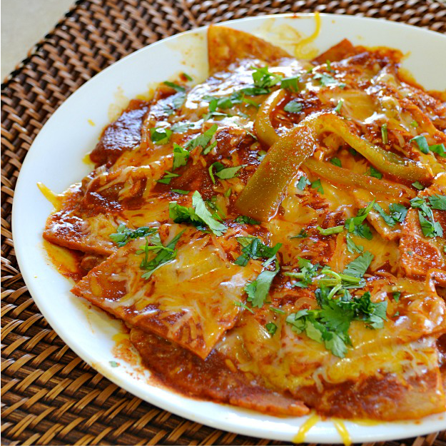

Description
Here's a recipe for a classic Mexican breakfast staple, Chilaquiles. Like a lot of breakfast classics, it's typically made using leftover ingredients from a meal cooked the night before, in this case, tortillas and salsa roja or salsa verde, and complimented with a generous helping of eggs and cheese (A good breakfast isn't really complete without those, is it?).
This recipe is adapted from the great website Lady Behind The Kitchen, with a few of my own additions and substitutions.
Ingredients (serves 2)
- 1/2 cup frying oil
- 8 corn tortillas, cut into quarters
- 1 cup salsa roja or salsa verde (storebought is fine)
- 2 ounces diced fresh chiles (jalapenos, green chiles, etc.)
- 1 to 1-1/2 cups Mexican cheese blend, shredded
- 4 large eggs
- diced cilantro and lime juice for garnish
Directions
- Pour half the oil into a medium to large-sized skillet and heat on medium high heat.
- In a separate saucepan, combine your salsa of choice and the diced chiles. Heat on medium heat.
- In a second skillet, pour in the rest of the oil and heat it to medium heat. Crack your eggs into the skillet and cook them to your liking. Try to time it so your eggs are done when the rest of the dish is finished.
- Once oil is hot enough in the first skillet, fry the quartered tortillas until they're a light golden brown color. Remove when done onto a plate lined with paper towels.
- Dispose of any excess oil once all tortillas are fried.
- Add all the fried tortilla chips back into the skillet, then add about 75% of the heated salsa and your shredded cheese onto the tortillas, mix all ingredients gently so the tortilla chips don't crumble too much.
- Once combined, layer your finished eggs on top of the mixture, along with a the rest of the salsa drizzled over the top.
- Finish with chopped cilantro, lime juice, and maybe even a little extra cheese.
- TIP: You can flavor up the dish in multiple ways. Green onions, sour cream, grilled onions, and chopped tomatoes are all excellent additions.
More recipes: